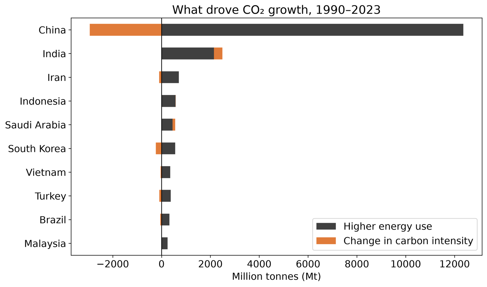

FeaturedData analysis
Who Is Driving Global CO₂ Growth? Emissions and Energy Use by Country, 1990–2023
Which countries are behind the growth in global carbon dioxide emissions? I analyzed emissions and energy consumption patterns country by country from 1990 to 2023 to see how the two move together over more than three decades.
- Tools
- Python · Data Analysis · Visualization